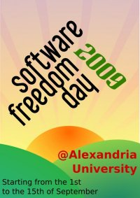

I enjoy contributing to my community in different ways whenever I have the time and/or means to make a difference, especially in promoting open source awareness. The following contributions are the ones I am most proud of.
I serve as a Senator in the Graduate Legislative Branch of Georgia Tech's Student Government Association (SGA), a part of the SGA Communication Committee which allows me to contribute to The Grad Word newsletter, and the Vice President of School of Computer Science on the Graduate Student Council for College of Computing.
|  | I was the team leader of the team that organized the Software Freedom Day 2009 event at my university. The event helped over 600 students learn more about the opensource culture and how and where to find opensource software. With 14 presentations and 11 speakers from all over Egypt along 2 weeks the event was very successful and we got great feedback from both attendees and speakers. We also managed to promote the event through local press. |
I founded the Opensource University Meetup Club at my university and helped it grow to have more than 900 members with different majors and interests with the goal of helping them learn more about Opensource and help spread the word of opensource to others. The continuation of this club helped organize Software Freedom Day events at Alexandria University in 2009, 2010, 2011, and 2012